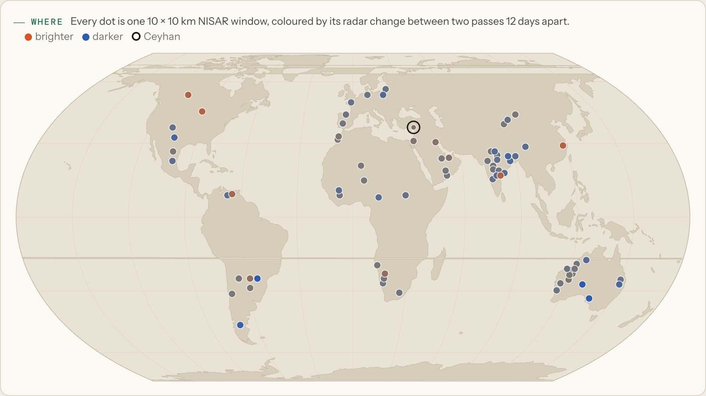

NASA Space Apps 2026 · Dancing with the SARs
Between
Passes
Can a radar satellite tell, from space, whether farmland got wetter or drier?
TEAMDusk Orbit
MEMBERDeniz Efe Bulut (solo)
EVENTNiğde Local Event, Türkiye (virtual)
CHALLENGEDancing with the SARs

Farmland near Ceyhan, Türkiye · orange: got brighter · blue: got darker
The problem
NASA's new radar satellite sees through clouds. But when a radar image changes, what changed on the ground?

Wet soil?
Rain makes soil reflect more radar.
Ploughing?
Rough, turned soil also looks brighter.
Harvest?
Removing crops changes the signal too.
What I found in my home region
In 12 days, 7× more farmland lit up than went dark.
The town centre, which should not change, stayed the same. So the change is real, not a camera error.
3,282 ha brightened vs 468 ha darkened (≥ 3 dB change, ≥ 1 ha). Town control: +0.12 dB. Holds at every threshold from 2 to 5 dB.
Why it happened · checked with three more NASA datasets
It rained, and the soil got wet.
Not harvest
9%
An optical satellite shows only 9% of the brighter fields lost their plants.
It rained
23 mm
The first big autumn rain fell between the two passes.
The soil got wet
0.16→0.36
NASA's soil-moisture satellite saw Ceyhan's soil more than double in water.
Ploughing can still explain some single fields. The next pass will tell.
NASA HLS (310 fields with a clear view) · NASA POWER rainfall 28–29 Oct · NASA SMAP soil moisture, m³/m³, 20 Oct and 3 Nov (exploratory ±2-day window).
Is it true everywhere?
I tested it at 400 random places worldwide. Twice.

Where NASA's soil-moisture satellite saw ground get wetter or drier, NISAR's radar changed with it.
I wrote the rules down before looking at any data, then repeated the whole test on new places. Same answer both times.
Two random draws of 200 NISAR sites; 74 and 73 had quality SMAP data. Spearman ρ 0.58 and 0.55, permutation p < 0.001 both. 36 of 45 sites with a clear moisture change moved the same way. Plans committed to Git before extraction.
A prediction · published before the satellite flew
I predicted the next satellite pass before it happened.
NISAR flew over Ceyhan again on 15 Nov. The day before, I published what it will show.
My prediction: wet soil
The soil dries, so the bright fields dim again.
The alternative: ploughing
Ploughed soil stays rough, so the fields would stay bright.
NASA publishes NISAR data about 10–20 days after a pass. The result will appear on the live app, scored by code saved before the pass.
Locked 14 Nov 2026 in research/prediction/PREDICTION.md with its scoring code. Confirmed if the brightened fields dim ≥ 2.07 dB overall and the typical field reverses ≥ 50 %.
Try it yourself
A radar lab anyone can open. Free, no login.
- Swipe between the two passes and tap any field to see why it changed.
- Explore the worldwide test, site by site.
- A Turkish page for local farmers.
- Every number is checked again in your browser.
LIVE APPdeniz2077.github.io/between-passes
CODEgithub.com/deniz2077/between-passes
AI use: Claude Code helped write code and documents. The question, place and decisions are mine. Every result comes from NASA data and is checked by 26 automated tests.